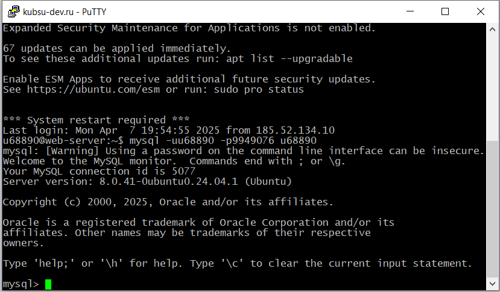
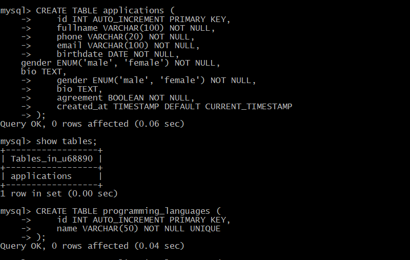

Запускаем клиент и подключаемся к БД

Используем команду mysql -uu'login' -p'password' u'login'
Создаем 3 таблицы: application с основной информацией из анкеты, programming_language, в которой хранятся
языки программирования и их ID, application_language, связывающую application с programming_language

Для создания таблиц используем команду CREATE TABLE имя таблицы (параметры);
Первичные ключи (ID) заполняются автоматически (AUTO-INCREMENT).
Структура таблиц

Вставляем в таблицу programming_language все языки программирования из формы
Для этого используем команду INSERT INTO имя таблицы (имена полей) VALUES (значения);
После отправки анкеты данные сохраняются в базу данных

Их можно удалить командой DELETE